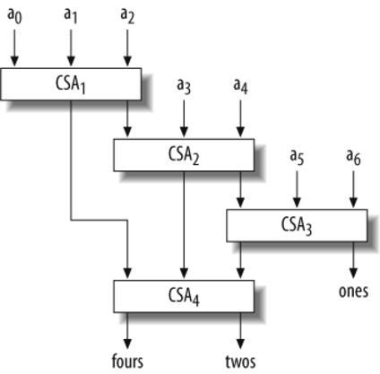

10.7. Applications
The population count instruction has a miscellany of uses. As mentioned at the beginning of this chapter, one use is to compute the size of a set when sets are represented by bit strings. In this representation, there is a "universe" set whose members are numbered sequentially. A set is represented by a bit string in which bit i is 1 if and only if member i is in the set.
Figure 10-3. A circuit for the total population count of seven words
Another simple application is to compute the Hamming distance between two bit vectors, a concept from the theory of error-correcting codes. The Hamming distance is simply the number of places where the vectors differ, that is:[ ]
]
[
dist(x, y) = pop(xy)
The population count instruction may be used to compute the number of trailing 0s in a word, using relations such as:
ntz(x) = pop(¬x & (x – 1)) = 32 – pop(x | –x)
(The reader who is not familiar with these mixtures of arithmetic and logical operations might pause for a few moments to discover why they work.) The function ntz(x) also has a miscellany of uses. For example, some early computers, upon interrupt, would store a "reason for interrupt" bit in a special register. The bits were placed in a position that identified which type of interrupt occurred. The positions were chosen in priority order, usually with the higher-priority interrupts in the less significant positions. Two or more bits could be set at the same time. To determine which interrupt to process, the supervisor program would execute the ntz function on the quantity in the special register.
Another application of population count is to allow reasonably fast direct indexed access to a moderately sparse array A that is represented in a certain compact way. In the compact representation, only the defined, or nonzero, elements of the array are stored. There is an auxiliary bit string bits that has a 1-bit for each bit position i for which A[i] is defined. Since bits is generally quite long, it is broken up into 32-bit words, with the first bit of the long string being at bit 0 (the least significant bit) of the first word of bits.
As a speedup device, there is also an array of words bitsum such that bitsum[j] is the total number of 1-bits in all the words of bits that precede entry j. This is illustrated in the following table for an array in which elements 0, 2, 32, 47, 48, and 95 are defined:
| bits | bitsum | data |
|---|---|---|
| 0x00000005 | 0 | A[0] |
| 0x00018001 | 2 | A[2] |
| 0x80000000 | 5 |
A[32] A[47] A[48] A[95] |
Here's the key task: given a "logical" index i into the full array, translate it into the "physical" index sparse_i where the array element is stored, if that element exists, or give some indication if it does not exist. For the array in the previous table, we wish to translate 47 to 3, 48 to 4, and 49 to "does not exist." Given a logical index i, the corresponding index sparse_i into the data array is given by the number of 1-bits in array bits that precede the bit corresponding to i. This may be calculated as follows:
j = i >> 5; // j = i/32. k = i & 31; // k = rem(i, 32); mask = 1 << k; // A "1" at position k. if ((bits[j] & mask) == 0) goto no_such_element; mask = mask - 1; // 1's to right of k. sparse_i = bitsum[j] + pop(bits[j] & mask);
The space cost of this representation is two bits per position in the full array.
The population count function can be used to generate binomially distributed random integers. To generate an integer drawn from a population given by Binomial(t, p) where t is the number of trials and p = 1/2, generate t random bits and count the number of 1s in the t bits. This can be generalized to probabilities p other than 1/2.[ ]
]
[
According to computer folklore, population count is important to the National Security Agency. No one (outside of NSA) seems to know just what they use it for, but it may be in cryptography work or in searching huge amounts of material.